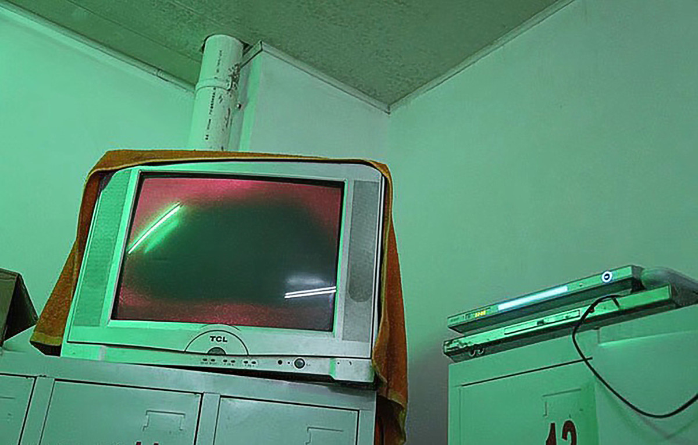

雾 | FOG

行为，录像，尺寸可变，2010
Action, Video Art, Variable, 2010
这是一个在公共浴室里的展览。艺术家对着一个摄像头哈气，试图将镜头一直保持在模糊状态。
This is an exhibition in a public bathroom. The artist breathes into a camera, trying to keep it blurry at all times.
“龙泉洗浴”是草场地离画廊区最近的一家澡堂，很多人可能已经多次经过它，不过并没有太过留意。forget art将会重新利用这个特定的“公共性”私密空间，试图重新发现和定义这个空间的属性和存在于其中的特定语境。事实上什么都不会改变，我们只是以一种低姿态的可忽略的美学观在其中展开有针对性的“微干预”，从赋予特定意义的现成品到情境的重新抽离，从声音和记忆的关系到物体中的时间性……..
Dragon Fountain is the public bathhouse closer to the gallery area at Caochangdi, many people may have passed it several times, but not pay too much attention on it. forget art will re-use this particular "public" private space, we are trying to rediscover and redefine the attribute of this space and the presence of a specific context in which. In fact nothing will change, we are just attemting to make some site-specific "micro intervention" which embody an aesthetics of low-profile and ignorance. From readymade endowed with specific meaning to detached situation from daily life; from relationship between memory and voice to timing factor of found objects ... ... ..